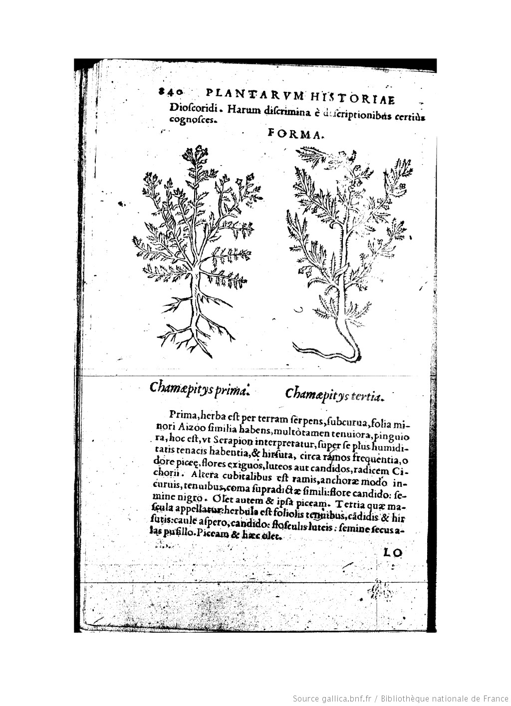
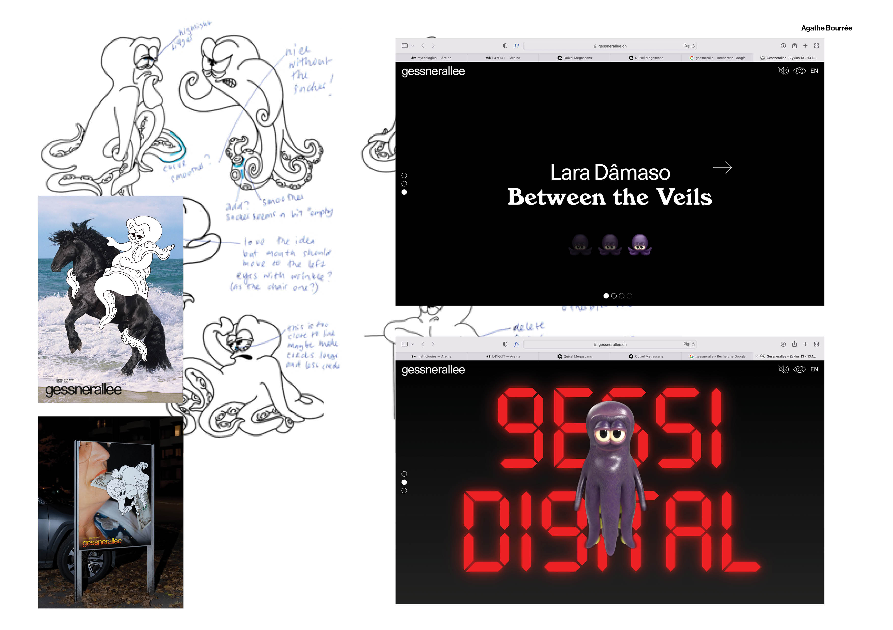

a propos
Ce projet est née d’un constat. Une expérience visuelle plus exactement. En juillet 2022 dans le métro Parisien était affichée une campagne de poster incitant à lire le rapport du Giec. Usant d’une rhétorique humoristique, ce ton soulignait le désintérêt du grand public pour les travaux scientifiques majeurs de la crise climatique. « Ce soir c’est rapport du Giec » était écrit sur l’affiche. Dans un premier temps, j’ai été surprise de cette campagne de grande ampleur, forcée de constater qu’elle n’aurait pas existé il y a cinq, dix ans de cela. Cependant, c’est ce qu’elle souligne qui m’intéresse: il est certain que ces travaux scientifiques ne sont pas lus ou très peu par le grand publique. Peut être est ce dû à leur forme, très textuelle, entrecoupée de graphiques, qui les inscrives dans un jargon scientifique trop peu didactique. Si ils se détachaient de ce répertoire visuel cependant, les rapports perdraient de leur crédibilité. Le langage visuel scientifique donnant à son contenu un aspect de vérité et de sérieux incontestable.
Il me semble qu’aujourd’hui il y a une place à investir pour faire le liens entre les travaux scientifiques alarmistes et l’action climatique, qui se situe dans la production graphique.
Face à l’urgence climatique, il est nécessaire de faire émerger des visions positives, pleines d'espoir pour l'avenir. L'art s'engage à rendre les abstractions tangibles, réelles et pertinentes, les rendant ainsi transposables dans nos vies, transformant l'impossible en possible. À travers l'art et la culture, il nous est possible de concevoir des avenirs alternatifs, inclusifs et plus qu’humains, afin de motiver l'action climatique. L'industrie culturelle et créative peut agir comme influenceur mondial vers une transition plus grande et plus juste.
Ce projet digital condense un ensemble d’écrits, un éventail de réflexions autour de la nécessité de produire des solutions créatives, optimistes, au regard du contexte climatique dans lequel nous nous trouvons. Il s’est construit de manière organique au fil des expériences quotidiennes, rythmé par le développement de ma pratique, de la découverte des outils de création d’images contemporains. Je propose à lire ainsi une suite d’articles écrits à un moment T, qui mettent en regard, questionnent comment la production d’image peut être investit comme champs spéculatif militant et positif.
Il s’agit de chroniques, c’est à dire des courts textes, produits de manière régulière entre 2022 et 2023, qui commentent et font l’état de réflexions autour de l’actualité graphique. Ces considérations pourraient évoluer avec le temps, c’est pourquoi elles représentent un moment donné, et s’inscrivent dans un contexte écologique et social précis.
Les références mobilisés dans ces courts essais, servent un propos subjectif et sont articulés dans un sens précis, afin de servir une rhétorique: la mienne.
Cultural studies, anthropologies ou images plus populaires, elle font parti intégrante de ma culture générale, qui est surement leur unique point commun et ce pourquoi elles coexistent dans ces textes.
J’ai donc choisit de mener ce projet d’auto-publication, il est pour moi un outil théorique mais aussi une archive consultable, c’est pourquoi le médium digital m’a paru le plus intéressant.
Dans a Green Imperative Victor Papanek appelle à examiner ce que chacun peut faire à une échelle individuelle, citoyen ainsi que professionnel. En tant que graphiste, à travers la production d’image, la hiérarchisation d’information et la diffusion d’un savoir « Simple act can empower the individual by providing a feeling of doing something to help »
ANTHROPOGRAPHIK
CHRONIQUES DES PRATIQUES GRAPHIQUES



01
RACONTER LA CRISE CLIMATIQUE
Comment la crise climatique est abordée et communiquée, à travers quelle stratégies de communication, quelles rhétoriques ? Quelles histoires racontés, sollicitent la prise de conscience de tout un chacun? Donne l’envie d’agir, provoque des changement à l’échelle individuelle et collective?
TELECHARGEMENT
02
CONNAÎTRE REPRÉSENTER PUBLIER LA NATURE
CONNAÎTRE LA NATURE, REPRÉSENTATON, CLASSIFICATION ET PUBLICATION DE LA FLORE.
POUR DES SYSTEME DE SAVOIRS TISSER DES NOUVEAUX RÉCITS AVEC L’ENVIRONEMENT
TELECHARGEMENT
03
DIFFUSER UN SAVOIR DANS LA
CULTURE MAINSTREAM
Comment la crise climatique est abordée et communiquée, à travers quelle stratégies de communication, quelles rhétoriques ? Quelles histoires racontés, sollicitent la prise de conscience de tout un chacun? Donne l’envie d’agir, provoque des changement à l’échelle individuelle et collective?
TELECHARGEMENT